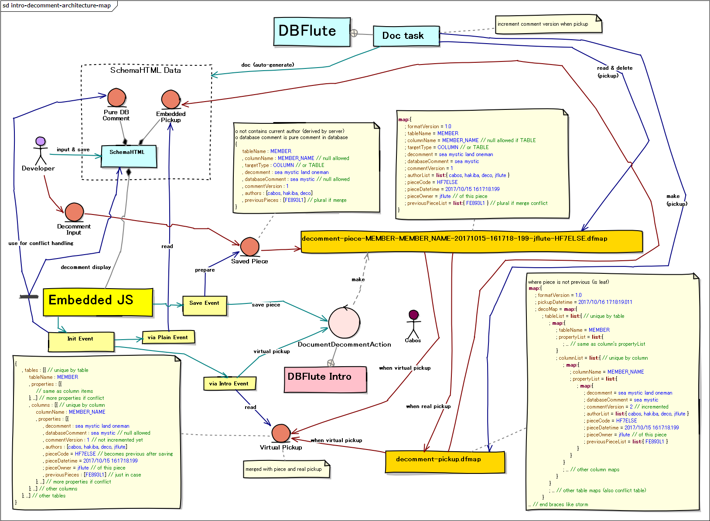

Decomment (でこめんと) on Intro
Decommentとは？
こんなシチュエーションで使います
- ディベロッパーが、SchemaHTML見ながらテーブルやカラムのことで悩んでる
- ディベロッパーが、わからないことを誰かに質問して知る
- ディベロッパーが、"ちゃんとDBコメント書いてあったらすぐわかったのに..." と思う
ズバリなに？
SchemaHTML上で "DBコメント" を追加・修正する、DBFlute Intro の機能 です。
複数人で追加・修正してもgitコンフリクトを起こさずマージできる のが特徴です。
えっ、なに？
ERDツール (ERFluteなど) を開かなくても、普段開発中にでよく見ている SchemaHTML で、各ディベロッパーが "こんなコメントがあったらもっと早くわかったのになぁ" と思った瞬間にDBコメントを記録することができます。
gitのブランチも、わざわざ専用のDB変更ブランチなどに切り替える必要はなく、 それぞれのディベロッパーのトピックブランチで作業できます。
ERDツールじゃダメなの？
通常、DBコメントの追加は、ERDドリブンの開発であればDDLを出力するERDツール (ERFluteなど) から追加します。ただ、ERDツールはDBコメントの 気軽な 追加にはあまり向いていません。
- ERDの保存ファイルは一般的にマージはできない (専用のブランチに切り替える必要あり)
- そもそもERDツールの起動してからテーブルとカラムまで行くまでとても気軽ではない
Introはどう関係しているの？
DBFlute Introが、入力されたDBコメントを受け付ける中継サーバーとなって、DBFluteクライアント内に保存をします。 詳しくは、また後で。
- ディベロッパーが、DBFlute Intro経由で SchemaHTML を開く
- ディベロッパーが、SchemaHTML でテーブルやカラムのDBコメントを追加・修正する
Decommentの環境構築
必要なDBFluteのバージョン
DBFlute と DBFlute Intro が以下のバージョン以降である必要があります。
- DBFlute
- 1.1.6
- DBFlute Intro
- 0.2.0
TODO jflute now writing...
コミッターを向け資料
Decommentのアーキテクチャマップ
図 : Decommentのアーキテクチャマップ 
{kind=link}
{kind=link}